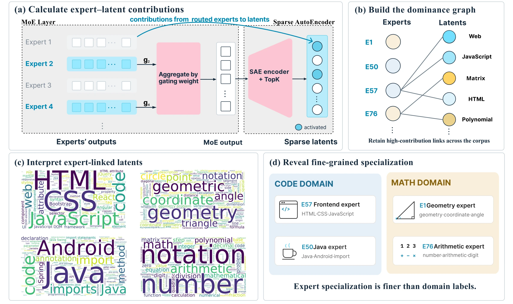
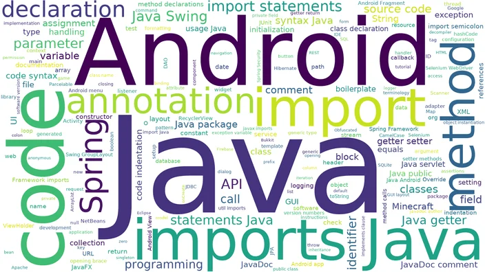
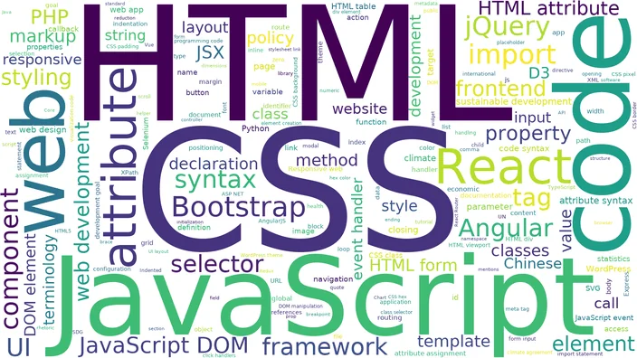
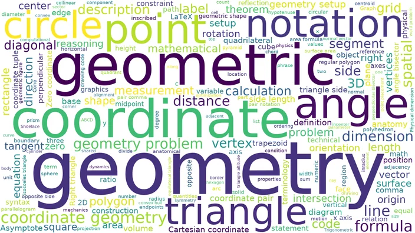
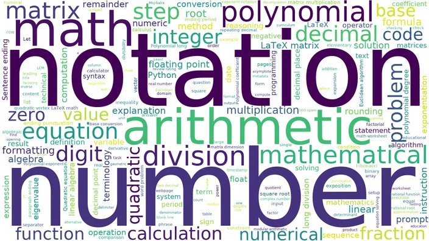

The router spreads its weight gently over the 8 selected experts. Contribution does not: on a typical (token, active latent) pair, the top expert alone supplies more than half of the latent's activation. We sort both quantities by rank and average them over the corpus.
TL;DR
We train a 220-latent SAE on layer 30 of Qwen3-30B-A3B and attribute each feature to the experts that drive it. Contribution is far more concentrated than routing; most features have only one or two dominating experts; and those experts split coarse domains into readable subfields—Java vs. front-end, geometry vs. arithmetic—while some domains claim far more experts than others. You can click an expert in Interactive below to see its features.
00Interactive
Explore all 128 experts of layer 30 of Qwen3-30B-A3B
No expert matches this search.
01Overview
From expert contributions to interpretable features

02Abstract
Mixture-of-Experts (MoE) models route each token to a few of many experts, yet what an individual expert is responsible for remains unsettled. Existing analyses count how often an expert is selected on domain-labeled corpora, an instrument that fixes the taxonomy in advance, stays coarse, and records selection rather than contribution. We instead study specialization in feature space by training a sparse autoencoder (SAE) on the output of an MoE layer. Since this output is a router-weighted sum of expert outputs and the SAE encoder is affine, the pre-activation of every latent decomposes exactly over the experts. Aggregated over a corpus, this gives each expert a dominant set of latents whose activation it principally drives. On layers 4, 30 and 46 of Qwen3-30B-A3B, contribution is far more concentrated than gating, most latents have only one or two dominators, and the overlap between dominant sets concentrates on a few expert pairs. Auto-interpreting these sets reveals a division of labor below coarse domains, with distinct experts for Java and front-end web code, or for geometry and for arithmetic and polynomials, while the coarse domains themselves take very unequal numbers of experts.
03Method
Trace every feature back to the experts that produced it
Prior work counts how often an expert is selected on corpora with human-chosen labels such as "code" or "math". We instead measure what each expert actually contributes, in the model's own feature vocabulary.
1
Decompose each SAE feature exactly over experts
An MoE layer outputs a router-weighted sum of its active experts, $y=\sum_j g_j u_j$. Because the SAE encoder is affine, the activation of every active latent $i$ splits exactly into per-expert terms:
$$f_i \;=\; \sum_{j \in \text{routed}} \underbrace{g_j\, W_{\mathrm{enc},(i)} \cdot u_j}_{\text{contribution of expert } j} \;+\; b_{\mathrm{enc},(i)}$$
2
Aggregate into a contribution fraction
Normalize the positive contributions on each token, average over a 1.5B-token corpus, and normalize over experts. The result $s(j,i)$ says how much of latent $i$ expert $j$ is responsible for.
3
Read each expert through its dominant set
Expert $j$ dominates latent $i$ when $s(j,i)\ge 0.2$. The latents an expert dominates form its dominant set; auto-interpreting them with an LLM tells us what the expert does, without fixing any taxonomy in advance.
Setup. Qwen3-30B-A3B (48 layers, 128 experts per layer, top-8 routing). We study layers 4, 30 and 46 with one TopK SAE of 220 latents per layer; latents are explained by GPT-5.5 from activating contexts and logit effects.
04Finding 1
A few experts do most of the work on each feature
Layer 4
Layer 30
Layer 46
gating weight
contribution
05Finding 2
Each expert owns a largely private set of features
Most latents are dominated by just one or two experts, and the dominant sets of two experts rarely overlap. The little overlap that exists sits in a handful of expert pairs, not in large clusters.
How many experts dominate a latent?
57–62%
of the 220 latents have exactly one dominating expert, across the three layers.
≈ 10-4
median Jaccard similarity between two experts' dominant sets; about 40% of expert pairs share no latent at all.
46–59%
of an expert's dominant set, on average, is dominated by that expert alone.
0≥ 0.05
06Finding 3
Specialization runs finer than "code" or "math"
Reading the explanations of the latents in each dominant set, we find experts that split a single coarse domain into recognizable subfields. Word size is the frequency of a word among the latent explanations. A GPT-5.5 judge measures how many explanations belong to each expert's theme, against a random baseline drawn from the other 127 experts.
Code domain

E50Java development
Java import statementsJDBC generated keysButterKnife Android imports

E57Front-end development
CSS flexbox layoutJSX div elementHTML viewport meta content
Math domain

E1Geometry
Angle bisector theoremTriangle ABC coordinate setupcircle/sphere tangency problems

E76Arithmetic and polynomial
Polynomial long divisionarbitrary-precision integersdecimal long division
07Finding 4
Features see what tokens cannot
Why not just look at the tokens routed to an expert? For expert 72, routed tokens are dominated by function words, and even after reweighting they only show fitness. Its latent explanations reveal two themes at once: exercise & health, and algorithms & data structures.
while (lo <= hi) {
int mid = lo + (hi - lo) / 2;
...
LATENT F97783 · LAYER 30 · CODE IS ILLUSTRATIVEFires only on the
<= of a binary search. Its explanation, "Binary search loop condition", ties it to algorithms, while a token word cloud could only show the bare symbol <=.08Finding 5
Some domains get far more experts than others
GPT-5.5 labels each expert from its word cloud alone, then groups the 128 labels of layer 30 into domains without being told which domains to look for. Eleven domains emerge, of very unequal size.
48 / 128
Computing and mathematics & reasoning alone hold 37.5% of the layer, while art appears in just one label. This plausibly mirrors pre-training mixtures rich in code and math.
36 experts
Three domains are not subject areas at all: text form, language, and entities & identifiers. A subject taxonomy would never recover them.
19 / 20
of the most-overlapping expert pairs fall inside one domain, e.g. E83 & E105 on punctuation, E77 & E107 on mojibake.
09Conclusion
Experts do divide labor, along feature-level lines
Contribution is far more concentrated than gating: a feature is typically driven by one or two experts, not all eight the router selects.
Dominant sets barely overlap; about half of each expert's set is its own, and the remaining overlap sits in a few same-domain pairs.
Experts specialize below conventional domain labels, e.g. Java vs. front-end web, geometry vs. arithmetic.
Experts are allocated very unevenly across domains, with computing and math taking over a third of the layer.
The analysis needs only expert outputs and an SAE on the layer output, so it applies to any MoE layer whose output is a weighted sum of its experts. It also suggests a testable hypothesis for expert pruning, merging and steering: editing an expert should chiefly affect the features it dominates.
10Citation
BibTeX
@misc{zhuo2026saeinterpretsmoesparse,
title={SAE Interprets MoE: Sparse AutoEncoders Reveal That MoE Experts Exhibit Human-Interpretable Fine-Grained Specialization},
author={Anyuan Zhuo and Shaohua Zhang and Yuan Lin and Pinyan Lu},
year={2026},
eprint={2611.08089},
archivePrefix={arXiv},
primaryClass={cs.LG},
url={https://arxiv.org/abs/2611.08089},
}